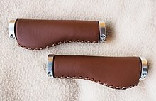
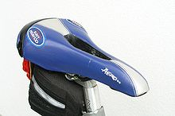
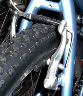
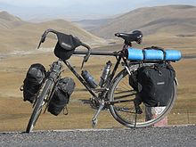

There are many parts of a bicycle. The main parts of a bicycle are wheels, frame, seat, handle bars, and components. We also could consider the helmet as a key safety issue. Wheels give the fundamental purpose to the bicycle; that is why we call it a “bi” (meaning two) and “cycle” (meaning turning).
The great majority of modern bicycles have a frame with upright seating that looks much like the first chain-driven bike.[7][8][9] These upright bicycles almost always feature the diamond frame, a truss consisting of two triangles: the front triangle and the rear triangle. The front triangle consists of the head tube, top tube, down tube, and seat tube. The head tube contains the headset, the set of bearings that allows the fork to turn smoothly for steering and balance. The top tube connects the head tube to the seat tube at the top, and the down tube connects the head tube to the bottom bracket. The rear triangle consists of the seat tube and paired chain stays and seat stays. The chain stays run parallel to the chain, connecting the bottom bracket to the rear dropout, where the axle for the rear wheel is held. The seat stays connect the top of the seat tube (at or near the same point as the top tube) to the rear fork ends.
Historically, women's bicycle frames had a top tube that connected in the middle of the seat tube instead of the top, resulting in a lower standover height at the expense of compromised structural integrity, since this places a strong bending load in the seat tube, and bicycle frame members are typically weak in bending. This design, referred to as a step-through frame or as an open frame, allows the rider to mount and dismount in a dignified way while wearing a skirt or dress. While some women's bicycles continue to use this frame style, there is also a variation, the mixte, which splits the top tube laterally into two thinner top tubes that bypass the seat tube on each side and connect to the rear fork ends. The ease of stepping through is also appreciated by those with limited flexibility or other joint problems. Because of its persistent image as a "women's" bicycle, step-through frames are not common for larger frames.
Step-throughs were popular partly for practical reasons and partly for social mores of the day. For most of the history of bicycles' popularity women have worn long skirts, and the lower frame accommodated these better than the top-tube. Furthermore, it was considered "unladylike" for women to open their legs to mount and dismount—in more conservative times women who rode bicycles at all were vilified as immoral or immodest. These practices were akin to the older practice of riding horse sidesaddle.
Another style is the recumbent bicycle. These are inherently more aerodynamic than upright versions, as the rider may lean back onto a support and operate pedals that are on about the same level as the seat. The world's fastest bicycle is a recumbent bicycle but this type was banned from competition in 1934 by the Union Cycliste Internationale. A carbon fiber Trek Y-Foil from the late 1990s. Historically, materials used in bicycles have followed a similar pattern as in aircraft, the goal being high strength and low weight. Since the late 1930s alloy steels have been used for frame and fork tubes in higher quality machines.
By the 1980s aluminum welding techniques had improved to the point that aluminum tube could safely be used in place of steel. Since then aluminum alloy frames and other components have become popular due to their light weight, and most mid-range bikes are now principally aluminum alloy of some kind. More expensive bikes use carbon fibre due to its significantly lighter weight and profiling ability, allowing designers to make a bike both stiff and compliant by manipulating the lay-up. Virtually all professional racing bicycles now use carbon fibre frames, as they have the best strength to weight ratio. A typical modern carbon fiber frame can weighs less than 1 kilogram (2.2 lb).
Other exotic frame materials include titanium and advanced alloys. Bamboo, a natural composite material with high strength-to-weight ratio and stiffness has been used for bicycles since 1894.[49] Recent versions use bamboo for the primary frame with glued metal connections and parts, priced as exotic models.
The drivetrain begins with pedals which rotate the cranks, which are held in axis by the bottom bracket. Most bicycles use a chain to transmit power to the rear wheel. A very small number of bicycles use a shaft drive to transmit power, or special belts. Hydraulic bicycle transmissions have been built, but they are currently inefficient and complex. Since cyclists' legs are most efficient over a narrow range of pedaling speeds, or cadence, a variable gear ratio helps a cyclist to maintain an optimum pedalling speed while covering varied terrain. Some, mainly utility, bicycles use hub gears with between 3 and 14 ratios, but most use the generally more efficient dérailleur system, by which the chain is moved between different cogs called chainrings and sprockets in order to select a ratio. A dérailleur system normally has two dérailleurs, or mechs, one at the front to select the chainring and another at the back to select the sprocket. Most bikes have two or three chainrings, and from 5 to 11 sprockets on the back, with the number of theoretical gears calculated by multiplying front by back. In reality, many gears overlap or require the chain to run diagonally, so the number of usable gears is fewer.
An alternative to chaindrive is to use a synchronous belt. These are toothed and work much the same as a chain—popular with commuters and long distance cyclists they require little maintenance. They can't be shifted across a cassette of sprockets, and are used either as single speed or with a hub gear. Different gears and ranges of gears are appropriate for different people and styles of cycling. Multi-speed bicycles allow gear selection to suit the circumstances: a cyclist could use a high gear when cycling downhill, a medium gear when cycling on a flat road, and a low gear when cycling uphill. In a lower gear every turn of the pedals leads to fewer rotations of the rear wheel. This allows the energy required to move the same distance to be distributed over more pedal turns, reducing fatigue when riding uphill, with a heavy load, or against strong winds. A higher gear allows a cyclist to make fewer pedal turns to maintain a given speed, but with more effort per turn of the pedals. With a chain drive transmission, a chainring attached to a crank drives the chain, which in turn rotates the rear wheel via the rear sprocket(s) (cassette or freewheel). There are four gearing options: two-speed hub gear integrated with chain ring, up to 3 chain rings, up to 11 sprockets, hub gear built into rear wheel (3-speed to 14-speed). The most common options are either a rear hub or multiple chain rings combined with multiple sprockets (other combinations of options are possible but less common).
The handlebars connect to the stem that connects to the fork that connects to the front wheel, and the whole assembly connects to the bike and rotates about the steering axis via the headset bearings. Three styles of handlebar are common. Upright handlebars, the norm in Europe and elsewhere until the 1970s, curve gently back toward the rider, offering a natural grip and comfortable upright position. Drop handlebars "drop" as they curve forward and down, offering the cyclist best braking power from a more aerodynamic "crouched" position, as well as more upright positions in which the hands grip the brake lever mounts, the forward curves, or the upper flat sections for increasingly upright postures. Mountain bikes generally feature a 'straight handlebar' or 'riser bar' with varying degrees of sweep backwards and centimeters rise upwards, as well as wider widths which can provide better handling due to increased leverage against the wheel.
Saddles also vary with rider preference, from the cushioned ones favored by short-distance riders to narrower saddles which allow more room for leg swings. Comfort depends on riding position. With comfort bikes and hybrids, cyclists sit high over the seat, their weight directed down onto the saddle, such that a wider and more cushioned saddle is preferable. For racing bikes where the rider is bent over, weight is more evenly distributed between the handlebars and saddle, the hips are flexed, and a narrower and harder saddle is more efficient. Differing saddle designs exist for male and female cyclists, accommodating the genders' differing anatomies and sit bone width measurements, although bikes typically are sold with saddles most appropriate for men. Suspension seat posts and seat springs provide comfort by absorbing shock but can add to the overall weight of the bicycle. A recumbent bicycle has a reclined chair-like seat that some riders find more comfortable than a saddle, especially riders who suffer from certain types of seat, back, neck, shoulder, or wrist pain. Recumbent bicycles may have either under-seat or over-seat steering.
Bicycles brakes may be rim brakes, in which friction pads, are compressed against the wheel rims; hub brakes, where the mechanism is contained with the wheel hub, or disc brakes, where pads act on a rotor attached to the hub.Most road bicycles use rim brakes, but some use disk brakes.[53] Disc brakes are more common for mountain bikes, tandems and recumbent bicycles than on other types of bicycles, due to their increased power, coupled with an increased weight and complexity.With hand-operated brakes, force is applied to brake levers mounted on the handlebars and transmitted via Bowden cables or hydraulic lines to the friction pads, which apply pressure to the braking surface, causing friction which slows the bicycle down. A rear hub brake may be either hand-operated or pedal-actuated, as in the back pedal coaster brakes which were popular in North America until the 1960s. Track bicycles do not have brakes, because all riders ride in the same direction around a track which does not necessitate sharp deceleration. Track riders are still able to slow down because all track bicycles are fixed-gear, meaning that there is no freewheel. Without a freewheel, coasting is impossible, so when the rear wheel is moving, the cranks are moving. To slow down, the rider applies resistance to the pedals, acting as a braking system which can be as effective as a conventional rear wheel brake, but not as effective as a front wheel brake.
Bicycle suspension refers to the system or systems used to suspend the rider and all or part of the bicycle. This serves two purposes: to keep the wheels in continuous contact with the ground, improving control, and to isolate the rider and luggage from jarring due to rough surfaces, improving comfort. Bicycle suspensions are used primarily on mountain bicycles, but are also common on hybrid bicycles, as they can help deal with problematic vibration from poor surfaces. Suspension is especially important on recumbent bicycles, since while an upright bicycle rider can stand on the pedals to achieve some of the benefits of suspension, a recumbent rider cannot. Basic mountain bicycles and hybrids usually have front suspension only, whilst more sophisticated ones also have rear suspension. Road bicycles tend to have no suspension.
The wheel axle fits into fork ends in the frame and fork. A pair of wheels may be called a wheelset, especially in the context of ready-built "off the shelf", performance-oriented wheels. Tires vary enormously depending on their intended purpose. Road bicycles use tires 18 to 25 millimeters wide, most often completely smooth, or slick, and inflated to high pressure in order to roll fast on smooth surfaces. Off-road tires are usually between 38 and 64 mm (1.5 and 2.5 in) wide, and have treads for gripping in muddy conditions or metal studs for ice.
Some components, which are often optional accessories on sports bicycles, are standard features on utility bicycles to enhance their usefulness, comfort, safety and visibility. Mudguards, or fenders, protect the cyclist and moving parts from spray when riding through wet areas and chainguards protect clothes from oil on the chain while preventing clothing from being caught between the chain and crankset teeth. Kick stands keep bicycles upright when parked, and bike locks deter theft. Front-mounted baskets, front or rear luggage carriers or racks, and panniers mounted above either or both wheels can be used to carry equipment or cargo. Pegs can be fastened to one, or both of the wheel hubs to either help the rider perform certain tricks, or allow a place for extra riders to stand, or rest.[citation needed] Parents sometimes add rear-mounted child seats, an auxiliary saddle fitted to the crossbar, or both to transport children. Bicycles can also be fitted with a hitch to tow a trailer for carrying cargo, a child, or both.
Toe-clips and toestraps and clipless pedals help keep the foot locked in the proper pedal position and enable cyclists to pull and push the pedals. Technical accessories include cyclocomputers for measuring speed, distance, heart rate, GPS data etc. Other accessories include lights, reflectors, mirrors, racks, trailers, bags, water bottles and cages, and bell.[56] Bicycle lights, reflectors, and helmets are required by law in some geographic regions depending on the legal code. It is more common to see bicycles with bottle generators, dynamos, lights, fenders, racks and bells in Europe. Bicyclists also have specialized form fitting and high visibility clothing. Children's bicycles may be outfitted with cosmetic enhancements such as bike horns, streamers, and spoke beads. Training wheels are sometimes used when learning to ride. Bicycle helmets can reduce injury in the event of a collision or accident, and a suitable helmet is legally required of riders in many jurisdictions. Helmets may be classified as an accessory or as an item of clothing. Bike trainers are used to enable cyclists to cycle while the bike remains stationary. They are frequently used to warm up before races or indoors when riding conditions are unfavorable.
